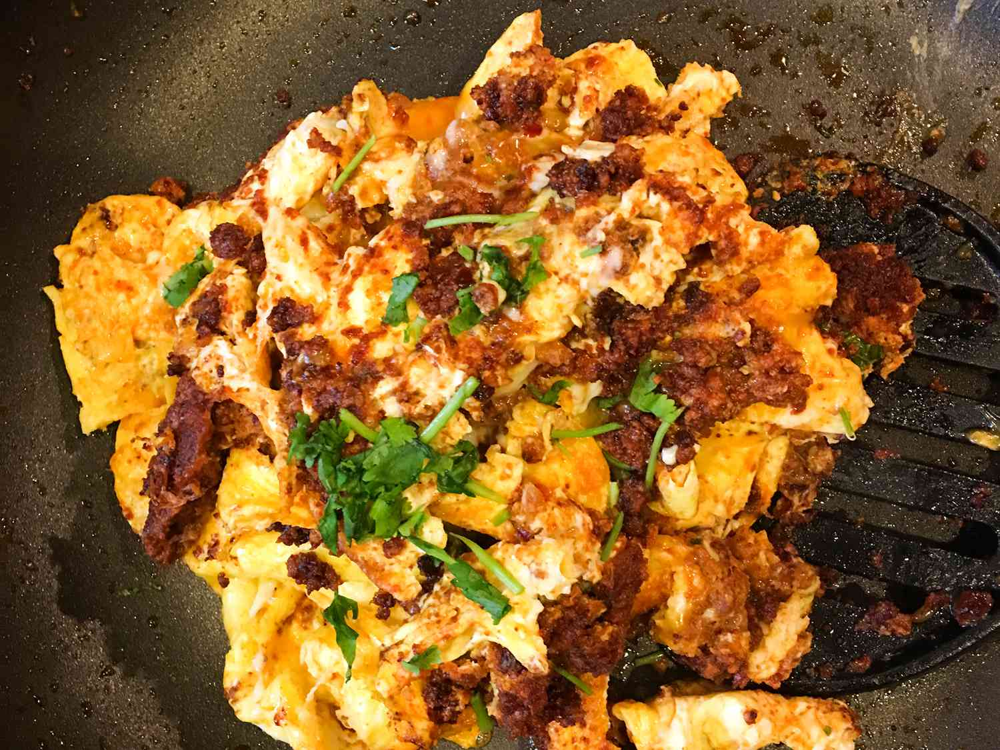

Scrambled Egg with Chorizo

This chorizo and egg dish is an appetizing breakfast with sipcy flavour.
You don't need much eggs to get a beautiful taste!
Ingredients
- Cooking Spray
- 1/4 cup Mexican-style chorizo, or more to taste
- 6 large eggs or less
- Salt to taste
Directions
Step 1
- Grease a large nonstick skillet with cooking spary;warm over medium-high heat.
Cook and stir chorizo in the hot skillet untill browned,about 5 minutes.
Step 2
- Whisk together eggs and salt in a medium bowl until combined;
pour over chorizo in the skillet;
cook and stir until eggs are set, about 5 minutes.
That's it! Food is ready.